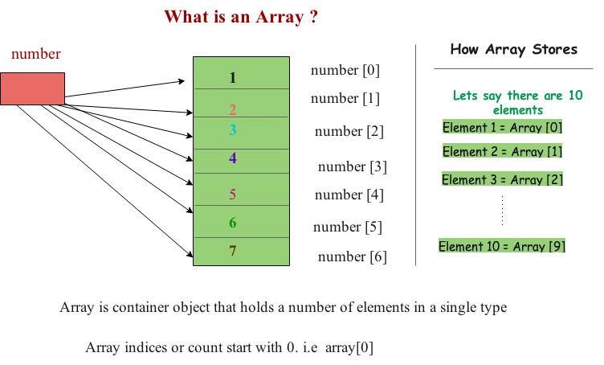

Ruby Arrays
div class="pre-btn" class="hint--right hint--error" data-hint="Previous Page!">


An array is a container object that holds a fixed number of values of a single type. The length of an array is established when the array is created.
In ruby arrays are indexed with starting as 0. Ruby arrays are associated with some reference these references are also called as indexes.

Ruby arrays can contain or hold any type of data including strings, integers, floating numbers, hashes..etc.
Lets take an example of sample array.
Ruby array syntax:
array = [value 1, value 2, value 3 ……. value n]
array [ 0 ] = value 1
array [ 1] = value 2
array [ value n ] = value n-1
Creating ruby arrays:
There are many different ways to create an array in ruby. We’ll see two common ways of creating arrays in ruby.
If you don’t know the size of an array you can use the new keyword to create an array.
my_array = Array.new
my_array = Array.new( 10 )
cars = Array.new( 6)
cars = ['BMW', 'Ford','Ferrari', 'Audi', ‘Skoda’, ‘Maruti’ ]
puts “The array of car size is + #{cars.size} “ # it will print 6
cars.each do |car_name|
puts car_name # It returns all the car names
end
6
BMW
Ford
Ferrari
Audi
presidents = ["Ford", "Carter", "Reagan", "Bush1", "Clinton", "Bush2"]
p=presidents[1..3]
p.each { |i| print i, "\n"}
Output:
Carter
Reagan
Bush1
Example 3
count = [100, 200, 300, 400, 500]
fruits = ['apples', 'oranges', 'pears', 'apricots']
change = [1, 'pennies', 2, 'dimes', 3, 'quarters']
# this first kind of for-loop goes through a list
# in a more traditional style found in other languages
for number in the_count
puts "This is count #{number}"
end
This is count 1
This is count 2
This is count 3
This is count 4
This is count 5
A fruit of type: apples
A fruit of type: oranges
A fruit of type: pears
A fruit of type: apricots
I got 1
I got pennies
I got 2
I got dimes
I got 3
I got quarters
first_array = [ 1,2,3,4,5]
second_array = [‘apple’, ‘mango’, ‘banana’, ‘grape’]
RUBY ARRAY METHODS LIST
Method Description Example
any? ruby any? method checks whether the array contains first_array = [1,2,3,4]
any value of not. It returns false if empty first_array.any?
O/p: true
at ruby at method returns the element at a given index first_array = [1,2,3,4]
first_array.at(2)
first_array.at(0)
O/p: 3
1
concat ruby concat method will add the values to array itself.
first_array = [1,2,3,4]
first_array.concat([5,6,7,8])
puts first_array
O/p: 1,2,3,4,5,6,7,8
delete ruby delete method will delete the given element from the array
my_array = [‘a’, ‘b’, ‘c’, ‘d’ ]
my_array.delete(‘b’) # deletes b element from the array
puts my_array # prints ‘a’, ‘c’, ‘d’
similar to delete we also have ruby delete_at and ruby delete_if.
delete_at will delete any element at a given index
a = ["ant", "bat", "cat", "dog"]
a.delete_at(2) #=> "cat"
a #=> ["ant", "bat", "dog"]
while ruby delete_if will delete if the given element is present in the array. Otherwise it returns nil.
scopes = [97, 42, 75]
scores.delete_if {|score| score < 80}} # => 97
each ruby each method will print each element in an array
numbers = [1,2,3,4,5]
numbers.each {| i| print i , “ ,”}
O/p: 1,2,3,4,5
each_with_index ruby each with index method will does the same job as ruby each method. But the only difference is it prints the indexes instead of values.
numbers = [100, 200, 300, 400 ]
numbers.each {| i| print i , “ ,”}
O/p: 0, 1, 2, 3
fill ruby fill method will replace all the existing ruby values with new values or elements
my_array = [ “a”, “d”, “c”, “d”, “e”]
my_array.fill(“X”)
print my_array # => [“X”, “X”, “X”, “X”, “X”]
first ruby first method will return first element or elements in a given array
my_array = [ “a”, “d”, “c”, “d”, ”e”, “f”, “g”]
my_array.first # => returns a
my_array.first(3) # => returns first 3 elements
o/p: “a”, “d” , “c”
include ruby include method checks whether the given element is in the array or not. If the element is present then it returns true otherwise false.
new_array = [ “a”, “b” “c”]
new_array.include?(“a”) # => true
new_array.include?(“ y”) # => false
insert ruby insert method will insert the different elements anywhere in the array or list.
a = %w { b c d}
a.insert( 1, 33) # => insert 33 element at index[1]
a.insert( 2, 44 ) # => Insert 44 element at index [2]
print a
[“b” 33, “44”, “c” ,”d”]
pop ruby pop method will pop the last element in the array
numbers = [100, 200, 300, 400 ]
numbers.pop #=> 400
print numbers
O/p: 100,200,300
push ruby push method will pushes the give new element at the end of an array
my_array = [ “a”, “b” , “c” , “d”]
my_array.push(“x”, “y”, “z”)
print my_array
o/p: [“a”, “b”, “c”, “d”, “x”, “y”, “z”]
reverse ruby reverse method will reverse the array elements
my_array = [ “a”, “b” , “c” , “d”]
my_array.reverse #=> [ “d”, “c”, “b”, “a”]
select ruby select method will select the elements with the given condition in an array or list.
num = [“1”, “2, “5”, “8”, “3”, “7”]
num.select { |x| x > 4 } # => select the element if it is greater than 4
print num
sort ruby sort method will sort all the elements in a specific order.
my_array = [“c”, “a”, “f”, “b”, “x”]
my_array.sort # => returns [“a”, “b”, “c”, “f”, “x” ]
uniq ruby uniq method will select only the uniw elements which means eliminates duplicate elements
my_array = [“a”, “b”, “a”, “k”, “a”, “d”, “b”, “c”, “d”]
my_array.uniq # => [ “a”, “b”, “c”, “d”, “k”]